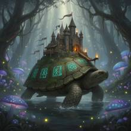
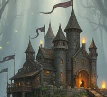
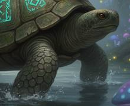

Attribute — Generate a game concept setting diagram: a huge turtle carries a small
Generate a game concept setting diagram: a huge turtle carries a small castle on its back, which serves as a mobile base for players and travels through the fantasy forest.

Judge — Direct
- PASSAttribute - Size — The image shows a turtle that is massive in scale compared to the human-like figures standing beside it and on its shell, fulfilling the 'huge turtle' description. A castle with multiple towers is situated on the turtle's back; it is proportionally small enough to be carried by the creature.
- PASSAction - Contact Interaction — The image clearly shows a castle built directly on the turtle's shell. The base of the castle rests on the shell, with vegetation growing around it, indicating the castle is being carried by the turtle.
- FAILAction - Animal — The turtle is depicted in a static position on a small island within a stream. Its legs are planted on the ground, and it is not shown in the act of walking, swimming, or moving in any way. Therefore, the action of 'travels' is not visible.
- PASSCompound - Imagination — The image's central theme is a large turtle carrying a castle on its back, which is an imaginative concept that does not exist in the real world.
Judge — Continuum
- PASSAttribute - Size — The image displays a turtle of immense proportions, appearing huge relative to the multi-towered castle on its back and the surrounding forest environment. The castle is small in comparison, fitting entirely on the turtle's shell.
- PASSAction - Contact Interaction — A stone castle with multiple turrets is visibly situated directly on the turtle's shell, demonstrating the physical interaction of the turtle carrying the castle.
- PASSAction - Animal — The turtle is depicted wading through water with its legs in a walking motion, creating splashes around its feet. This posture and the disturbed water indicate that the animal is traveling.
- PASSCompound - Imagination — The image's central theme is a massive turtle with a castle on its back, a concept that is fantastical and not possible in the real world.
What the agent did
Thinking
The user is requesting a game concept setting diagram: a giant turtle carrying a small castle on its back, functioning as a mobile base for players, traveling through a fantasy forest. Let me generate this image using flux2-dev. I should add visual details that the prompt suggests — fantasy forest, mobile base concept, game concept diagram style. Let me think about the composition: - A giant turtle (fantasy-style, moss-covered, with glowing runes, etc.) - A small castle on its back — a mobile base - A fantasy forest environment (bioluminescent plants, mist, mushrooms, giant trees) - Game concept setting diagram — this suggests a stylized concept art look Let me write a good prompt: "Game concept art setting diagram: a colossal ancient turtle covered in moss and glowing blue runes walking through an enchanted fantasy forest, carrying a small medieval castle on its back with towers, banners, and lit windows, the castle functions as a mobile base for adventurers, misty forest with giant glowing mushrooms, dappled light, epic fantasy concept art style, detailed matte painting, cinematic wide composition" Then inspect, edit, and mark as the best. Let's get started.
Step 1 — `generate_image`
{
"prompt": "Epic fantasy game concept art setting diagram: a colossal ancient turtle walking through an enchanted forest, its weathered green-brown shell covered in moss, lichen and glowing teal runes. On top of the turtle's shell sits a small detailed medieval castle with stone towers, conical roofs, fluttering banners, torches and warm glowing windows \u2014 clearly functioning as a mobile base for adventurers, with tiny flags, a drawbridge, and campfire lights. The turtle wades through a bioluminescent fantasy forest with giant glowing mushrooms, twisted oaks, hanging vines, drifting fireflies and soft mist, god rays filtering through the canopy. Wide cinematic composition, detailed matte painting, rich color palette, professional game art concept sheet style.",
"model": "flux2-dev",
"width": 1344,
"height": 768
}Result img_0

Thinking
The image turned out great. Let me inspect it: - Giant turtle: Yes, a massive turtle with glowing teal-colored runic symbols on its shell, walking through water in a fantasy forest. ✓ - Small castle on its back: Yes, a stone castle with towers, flags, glowing windows, and torches. ✓ - Mobile base for players: The castle looks like a base with a gate, torches, and flags — reads well as a mobile base. ✓ - Fantasy forest: Yes, a mystical forest with glowing mushrooms, mist, fireflies, and giant trees. ✓ Let me zoom in and check the details — the flags and windows, and whether there are any artifacts. The image looks good. Let me inspect a few regions to verify the quality of the details: the castle and the turtle's shell/runes. Actually, the image looks quite good. Let me do a quick inspection of the castle area and check for any weird artifacts.
Model
The first generation looks strong. Let me inspect key areas at full resolution before deciding.
Step 2 — `inspect_region`
{
"image": "img_0",
"roi": "the castle on the turtle's shell",
"padding": 0.1
}Result img_1

Step 3 — `inspect_region`
{
"image": "img_0",
"roi": "the turtle's head and front legs",
"padding": 0.1
}Result img_2

Thinking
Both crops look great: - Castle: detailed stone and timber castle, conical roofs, flags, glowing windows, torches, arched gates — clearly a fortress/base. No text artifacts. - Turtle: well-rendered head with good texture, sturdy legs, water splashes, glowing runes on the shell. Everything in the prompt is present: - Giant turtle ✓ - Small castle on its back ✓ - Mobile base for players (flags, torches, lit windows, gates, camp-like feel) ✓ - Traveling through a fantasy forest (mist, glowing mushrooms, fireflies, god rays) ✓ The image is a high-quality concept art. I think it's in a submittable state. Let me mark it as the best. Any minor improvements? Could add some tiny figures (players/adventurers) to reinforce "mobile base for players" — but the prompt says "functions as a mobile base for players," which is more of a narrative/conceptual element than a visual requirement. The castle already reads as a base. Adding tiny figures could reinforce it, but risks degrading quality. The current state is very good — good-enough is a stopping condition. Actually, let me think about whether I should add a few tiny adventurer figures near the castle gate to strengthen the "base for players" concept. It could be a nice touch. But the risk of the edit degrading the image… The image is already excellent and matches the prompt well. According to the guidance, "good enough is a stopping condition. Don't keep editing to chase marginal improvements." I'll mark img_0 as the best and stop.
Model
Both details hold up even at full resolution: - **Castle**: A sturdy fortress in a combination of stone and wood, with conical towers, fluttering banners, lit windows, and torch-lit gate arches — it reads clearly as a functioning base rather than a mere set decoration. - **Turtle**: The head, legs, and shell plates are clean with no artifacts. The teal glowing runes and water splashes are crisp. All the requested elements are in place: the giant turtle, the small castle on its back as a mobile base, and a fantastical forest with bioluminescent mushrooms, mist, fireflies, and light streaming through the tree canopy. This is a solid concept setting image — I'll mark it as the best and stop here, since the result matches the prompt well.
Step 4 — `mark_best`
{
"image": "img_0",
"reason": "All prompt elements present and verified at full resolution: huge turtle with a small castle (towers, banners, lit windows, torches) on its shell serving as a mobile base, traveling through a bioluminescent fantasy forest with mushrooms, mist and god rays. Clean details in castle and turtle crops."
}Thinking
Marked. Next is the closing summary. The image is already marked as the best, and no edits were made after the marking.
Model
Done! The game concept setting diagram is ready: **The image** — A colossal ancient turtle, its shell etched with glowing teal runes, plods through a misty bioluminescent forest while carrying a small medieval castle on its back. The castle reads as a genuine mobile base: stone towers with conical roofs, fluttering banners, warm lit windows, torch-lit walls, and an arched gate with a bridge. The surrounding forest reinforces the fantasy journey — giant glowing mushrooms, twisted oaks, drifting fireflies, and god rays through the canopy, with the turtle wading through shallow water. Verified at full resolution: - **Castle** — detailed, no rendering artifacts, clearly functional (gate, torches, windows, flags) - **Turtle** — clean anatomy, textured legs and head, crisp runes and water splash - **Setting** — atmospheric depth with layered mist and glowing flora The best version is marked, so it's what gets returned. If you'd like variants — e.g., a top-down isometric view for UI, tiny adventurer figures added to the castle grounds, or a different time of day — just say the word.